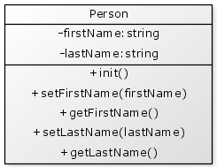

The Unified Modeling Language (UML) allows us to create diagrams that represent an object oriented system.
You will see UML in almost every form of object oriented reference so it is useful to understand how to read it.
The UML representation for a simple component would look like this:

The name of the component is in the top section. The middle section represents the variables inside the component and the bottom section represents the functions.
Notice that variables are prefixed with a "-". This indicates that the variables "private" and are hidden inside the component.
In conventional UML the type of the variable appears after the ":". Within ColdFusion, however, the type of variable is less important so for ColdFusion UML diagrams this can be optional.
The functions are prefixed with a "+". This indicates that the functions are "public" and can be called from outside the object.
As with the variables, the type of the data returned by the function is specified after a ":". Again, within the ColdFusion development this is an optional notation.
If we were to implement this component in code then we would have:
{% highlight cfm %}